~오사카 메이드 카페 방문기~
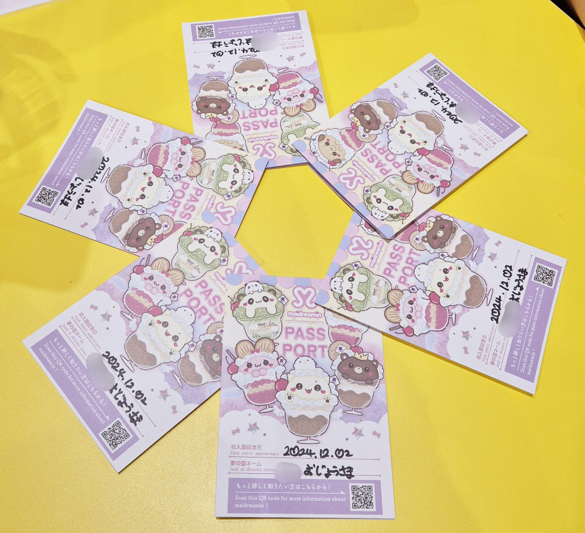
여러분은 꿈의 나라에 가 본 적 있는가?
놀랍게도 나는 있다. 지금부터 그 경험을 이야기해보려고 한다.
때는 2024년 12월 2일. 5명의 친구들과 함께 오사카를 여행하던 나는 한 카페에 방문하게 된다.
그것은 다름아닌…
메이드 카페란?
귀여운 메이드복을 입은 알바생들이 음식을 서빙해주는 일본의 이색 코스프레 카페이다.
우리가 고른 곳은 메이드리밍이라는 이름의 카페로,
손님들이 꿈의 나라로 여행하는 공주님이나 왕자님이라는 귀여운 컨셉을 가진 곳이었다.
떨리는 마음으로 카페 건물의 엘레베이터에 올라탔다.
그리고 엘레베이터 문이 열리자마자 바로 밝은 카페의 모습이 펼쳐졌고,
메이드 한 분이 웃으며 우리를 맞이해 주었다.
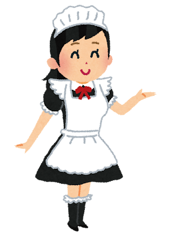
이때부터 정말 실감이 났다.
왔구나… 와 버렸구나…
메이드 카페에……
우리는 ‘아야’라는 별명을 가진 메이드의 안내에 따라 자리에 착석했다.
아야 쨩은 가게에 대한 설명과 주의사항을 얘기해 주었다.
메이드에게 손 대거나 사진 촬영을 하면 안 된다는 상식적인 것들부터
가게 내의 특수한 규칙까지 알려 주었는데,
그중 가장 부끄러웠던 것은 바로…
메이드를 부를 때는 손을 들고 냥냥이라고 외쳐야 한다는 것이었다.
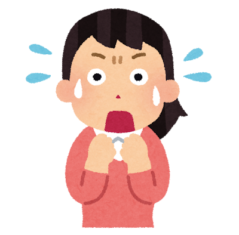
뭐라고…?
안 그래도 낯을 가리는 나는 그 말을 듣자 기가 쭉 빨리는 기분이었다.
심지어 그들은 테이블에 물을 세팅해 주며 그것을 ‘모에 워터’라고 불렀다.
(대충 번역하자면 ‘마시면 심쿵하게 되는 귀여운 물’이다.)
정말, 알고는 있었지만 정말!!! 컨셉에 충실한 곳이었다.
어쨌든 우여곡절 끝에 각자 주문을 마쳤다.
나는 강아지 모양의 귀여운 홍차 파르페를 주문하고 기다렸다.
그리고 조금 기다리자 디저트를 가지고 메이드가 왔다.
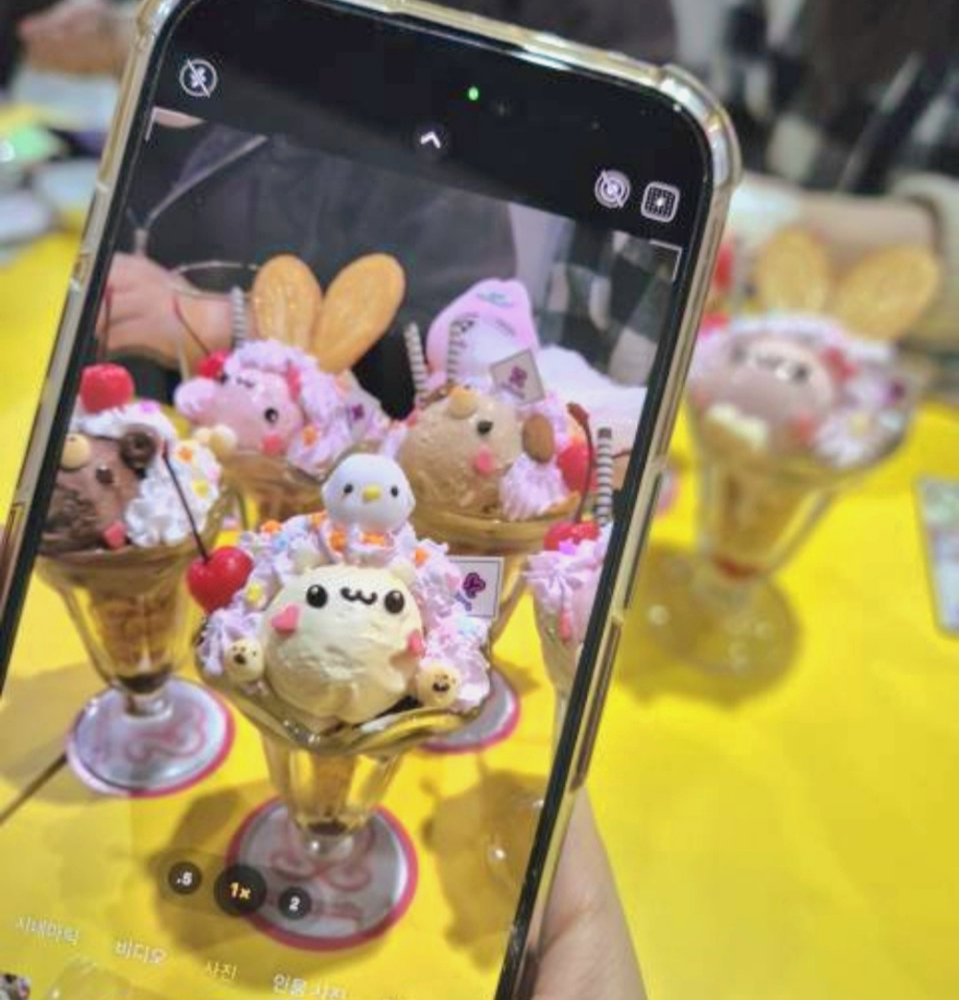
이쯤에서 메이드 카페 하면 떠오르는 유명한 말이 있을 것이다.
이건 음식이 더 맛있어지도록 마법 주문을 걸어 준다는 컨셉의 메이드카페만의 독특한 문화이다.
그리고 메이드 카페에 가면 메이드 뿐만이 아니라 손님도 함께 이 주문을 외쳐야 한다.
아야 쨩은 친절하게 우리에게 설명을 해 주었고, 우리는 아야 쨩을 따라 손하트를 하며 외쳤다.
나는 또 한번 느꼈다.
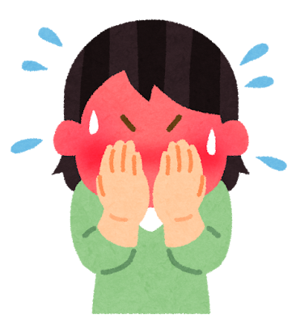
아, 메이드 카페는 정말 아무나 올 수 있는 곳이 아니다.
이 수치심만을 견디고 즐길 수 있는 강한 자만이 오는 곳이다…… 라고.
그렇게 시간을 보내다 문득 화장실이 가고 싶어진 나는
손을 들고 메이드에게 화장실이 어디냐고 물어보았다.
그리고 메이드는 손가락으로 엑스 표시를 만들어 보이며 대답했다.
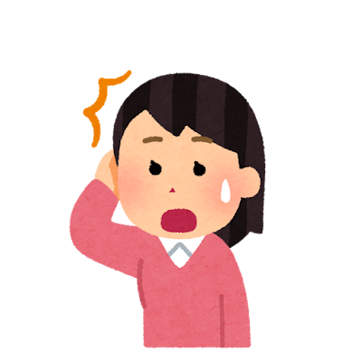
헉… 화장실이 없다고? 그럼 건물 밖으로 나가야 하는 건가? 이런 건 좀 불편하네…
그렇게 생각한 순간.
그렇다. 메이드 카페는 정말 컨셉에 충실하다.
그들은 화장실을 화장실이라 부르지 않고 꽃밭(おはなばたけ)이라고 불렀다.
(실제로 화장실 앞에 꽃밭이라는 팻말이 걸려 있고, 안에도 조화가 비치되어 있었다.)
재치 있고 재밌는 대답에 친구들과 한바탕 웃으며 아 그럼 꽃밭까지 안내해 주세요~^^ 라고 했다.
그러다 갑자기 가게 중앙의 무대로 점원들이 분주하게 움직였다.
다른 테이블에서 메이드의 라이브 공연권을 구매한 모양이었다.
우리는 운 좋게도 공짜로 메이드가 춤추는 것을 볼 수 있게 된 것이었다!
그리고 무대를 기다리고 있자, 메이드들이 객석을 돌며 뽑기에 대한 안내를 하기 시작했다.
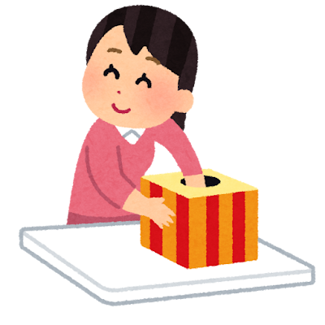
바구니 안의 뽑기권을 뽑으면 거기 적힌 등수에 따라 야광 응원봉이나 카페의 굿즈,
귀여운 동물 머리띠 등의 상품을 받을 수 있는 재밌는 이벤트였다.
그리고 내 친구중 한 명이 그 뽑기에 도전해 보기로 했다.
그런데 믿을 수 있겠는가?
한 번에 1등 상품이 당첨되어버렸다고 한다면……
게다가 1등 상품은 바로……!
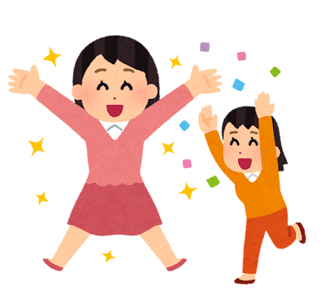
1등 종이가 뽑힌 순간 우리는 환호했고,
1등을 뽑은 친구 한 명 뿐만이 아니라 일행 모두가 함께 찍어도 된다는 희소식에
총 9명의 소녀들이 무대로 나가 단체 사진을 찍게 되었다.
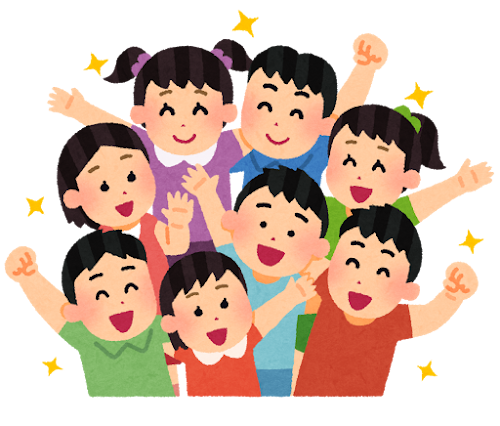
이 사진으로 메이드 카페 방문은 정말 잊을 수 없는 추억이 되었다.
단체 사진 소동이 한바탕 지나간 후,
아야 쨩이 무대로 나가 메이드리밍의 로고 송에 맞춰 춤을 추기 시작했다.
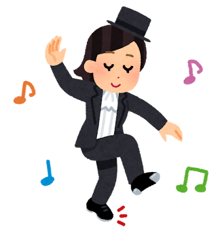
그걸 보며 메이드 카페의 알바생은 정말 대단하다고 생각했다.
21세기의 메이드는 손님에게 친절해야 하고, 외모도 관리해야 하고, 춤도 잘 춰야 하는구나…
그리고 공연이 끝나자 곧 퇴장할 시간이 다가왔는지
아야 쨩이 폴라로이드 사진을 찍을 준비를 해 주었다.
함께 사진을 찍을 메이드를 고를 수 있었는데,
우리 6명은 모두 우리에게 많이 신경써 주었던 아야 쨩을 골랐다.
아야 쨩은 한 번에 6명씩이나 자기를 선택해 준 건 처음이라고 감격스러워했다.
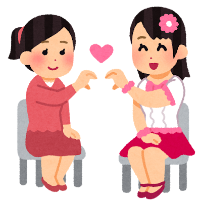
그렇게 정말로 꿈만 같던 시간이 지나고 카페를 나서게 되었다.
아야 쨩은 우리가 가게를 떠날 때까지 밝은 미소로 응대해 주었고,
우리도 신이 나서 다음에 꼭 또 방문하겠다고 했다.
가게를 나서자 정말 방금까지 있었던 일이 꿈만 같이 느껴졌다.
혼자였으면 하지 못했을 특별한 경험을 좋아하는 친구들과 할 수 있어 좋았고,
기회만 된다면 다음번에도 또 방문하고 싶다.
자신이 수치심을 잘 견디는 강인한 멘탈의 소유자라면
일본 여행 중 한 번쯤 메이드 카페에 방문해 보는 것을 추천한다.